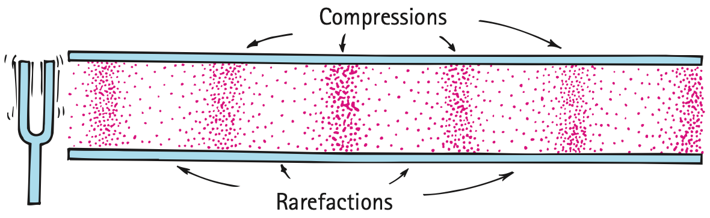

Nature of Sound
One of the world’s great combinations of physicist, author, and physics educator is Kenneth W. Ford, who was a University of California professor, a college president, and executive director and CEO of the American Institute of Physics before he became a classroom teacher in grades 9 through 12 at Germantown Academy in Pennsylvania. An expert and author on quantum physics, Ken is passionate about teaching, flying small airplanes, gliders, and, his wife Joanne. He is also a close friend and refines much of my writing before it is published. Conceptual Physics has benefited from Ken’s deep and extensive knowledge of physics, for which I am grateful.
When I first wrote Conceptual Physics, Ken’s textbook Basic Physics was an inspiration to me, as were the three volumes of The Feynman Lectures on Physics and the Eric Rogers textbook Physics for the Inquiring Mind. Ken was one of the first reviewers of Conceptual Physics. He praised and adopted it for his own classes, and alerted me to errors and suggested improvements. A saying among teachers is that if you want to learn a subject, teach it. I add: If you want to add more to your knowledge of physics, write about it. I continually learn, much due to Ken’s input.
As seen in the first photo in the chapter opener, Ken was a user of noise-canceling earphones while flying noisy aircraft years ago. His readable book In Love with Flying emphasizes his greater passion for motorless flight—soaring. In Ken’s portrait, notice Planck’s constant on the license plate of his hybrid and a Diamond Soaring Badge on his lapel. Ken’s latest clearly written books, The Quantum World: Quantum Physics for Everyone and 101 Quantum Questions: What You Need to Know About the World You Can’t See, are essentials for anyone who wants to learn quantum physics. In addition to tutoring high-school students online, Ken is presently writing about his personal history with the development of the first H-bomb at Los Alamos with his late mentor, John Wheeler.
My dedication in the 8th edition of Conceptual Physics was: To Kenneth W. Ford—eminent physicist, great human being. That dedication still rings true.
20.1 Nature of Sound
If a tree fell in the middle of a deep forest hundreds of kilometers away from any living being, would there be a sound? Different people will answer this question in different ways. “No,” some will say, “sound is subjective and requires a listener. If there is no listener, there is no sound.” “Yes,” others will say, “a sound is not something in a listener’s head. A sound is an objective thing.” Discussions like this one often produce no agreement because the participants fail to realize that they are arguing not about the nature of sound, but about the definition of the word. Either side is correct, depending on the definition used, but investigation can proceed only when a definition has been agreed upon. Scientists, such as the five shown in the photos at the beginning of the chapter, take the objective position and define sound as a form of energy that exists whether or not it is heard. They go on from there to investigate its nature.
Origin of Sound
Most sounds are waves produced by the vibrations of matter. In a piano, a violin, and a guitar, the sound is produced by the vibrating strings; in a saxophone, by a vibrating reed; in a flute, by a fluttering column of air at the mouthpiece. Your voice results from the vibration of your vocal cords. Sounds in the air are caused by a wide variety of vibrations.
In each of these cases, the original vibration stimulates the vibration of something larger or more massive, such as the sounding board of a stringed instrument, the air column within a reed or wind instrument, or the air in the throat and mouth of a singer. This vibrating material then sends a disturbance through the surrounding medium, usually air, in the form of longitudinal waves. Under ordinary conditions, the frequencies of the vibrating source and the sound waves are the same. We describe our subjective impression about the frequency of sound with the word pitch. Frequency corresponds to pitch: A high-pitched sound from a piccolo has a high frequency of vibration, and a low-pitched sound from a foghorn has a low frequency of vibration.
The ear of a young person can normally hear pitches corresponding to the range of frequencies between about 20 and 20,000 hertz. As we grow older, this human hearing range shrinks, especially at the high-frequency end. Sound waves with frequencies below 20 hertz are infrasonic, and those with frequencies above 20,000 hertz are called ultrasonic. We cannot hear infrasonic and ultrasonic sound waves. Infrasonic: frequency too low for human hearing. Ultrasonic: frequency too high for human hearing.
Media That Transmit Sound
Most sounds that we hear are transmitted through the air. However, any elastic substance—whether solid, liquid, gas, or plasma—can transmit sound. Elasticity is the property of a material that has changed shape in response to an applied force and then resumes its initial shape once the distorting force is removed. Steel is an elastic substance. In contrast, putty is inelastic.1 In elastic liquids and solids, the atoms are relatively close together, respond quickly to one another’s motions, and transmit energy with little loss. Sound travels about 4 times faster in water than in air and about 15 times faster in steel than in air.
Relative to solids and liquids, air is a poor conductor of sound. You can hear the sound of a distant train more clearly if you place your ear against the rail. Similarly, you can hear a ticking watch set on a table beyond hearing distance if you place your ear to the table. Or click some rocks together under water while your ear is submerged. You’ll hear the clicking sound very clearly. If you’ve ever been swimming in the presence of motorized boats, you probably noticed that you can hear the boats’ motors much more clearly under water than above water. Liquids and crystalline solids are generally excellent conductors of sound—much better than air. The speed of sound is generally greater in solids than in liquids, and greater in liquids than in gases. Sound won’t travel in a vacuum because there is nothing to compress and expand.
Sound in Air
20.2 Sound in Air
When we clap our hands, the sound produced is nonperiodic. It consists of a wave pulse that travels outward in all directions. To better understand how a pulse moves in air, consider a long room, as shown in Figure 20.1a. At one end is an open window with a curtain over it. At the other end is a door. When we open the door, we can imagine the door pushing the molecules next to it away from their initial positions and into their neighbors. The neighboring molecules, in turn, push into their neighbors, and so on, like a compression traveling along a spring, until the curtain flaps out the window. A pulse of compressed air has moved from the door to the curtain. This pulse of compressed air is called a compression.
When we close the door, as in Figure 20.1b, the door pushes some air molecules out of the room. This produces an area of low pressure behind the door. Neighboring molecules then move into it, leaving a zone of lower pressure behind them. We say this zone of lower-pressure air is rarefied. Other molecules farther away from the door, in turn, move into these rarefied regions, and a disturbance again travels across the room. This is evidenced by the curtain, which flaps inward. This time the disturbance is a rarefaction.

As with all wave motion, it is not the medium itself that travels across the room but the energy-carrying pulse. In both compression and rarefaction, the pulse travels from the door to the curtain. We know this because, in both cases, the curtain moves after the door is opened or closed. If you continually swing the door open and closed in periodic fashion, you can set up a wave of periodic compressions and rarefactions that will cause the curtain to swing in and out of the window. On a much smaller but more rapid scale, this is what happens when a tuning fork is struck. The periodic vibrations of the tuning fork and the waves produced are considerably higher in frequency and lower in amplitude than those caused by the swinging door. You don’t notice the effect of sound waves on the curtain, but you are well aware of them when they meet your sensitive eardrums.
Consider sound waves in the tube shown in Figure 20.2. For simplicity, only the waves that travel in the tube are depicted. When the prong of the tuning fork next to the tube moves toward the tube, a compression enters the tube. When the prong swings away in the opposite direction, a rarefaction follows the compression. It’s like a Ping-Pong paddle moving to and fro in a room packed with Ping-Pong balls. As the source vibrates, a periodic series of compressions and rarefactions is produced. The frequency of the vibrating source and the frequency of the wave it produces are the same.


Pause to reflect on the physics of sound while you are listening to your radio sometime. The radio loudspeaker is a paper cone that vibrates in rhythm with an electrical signal. Air molecules next to the vibrating cone of the speaker are themselves set into vibration. This air, in turn, vibrates against neighboring particles, which, in turn, do the same, and so on. As a result, rhythmic patterns of compressed and rarefied air emanate from the loudspeaker, showering the whole room with undulating motions. The same process occurs with the bud earphones used with your iPod or other device in which the speaker is small enough to fit in your ear. The resulting vibrating air sets your eardrum into vibration, which, in turn, sends cascades of rhythmic electrical impulses along the cochlea nerve canal and into the brain. And you listen to the sound of music.
Figure 20.4 was omitted because no matching captured image was supplied.

Speed of Sound in Air
If we watch a person at a distance chopping wood, or see a faraway baseball player hitting a ball, we can easily see that the blow takes place an appreciable time before its sound reaches our ears. Likewise, thunder is heard after we see a flash of lightning. These common experiences show that sound requires a recognizable time to travel from one place to another. The speed of sound depends on wind conditions, temperature, and humidity. It does not depend on the loudness or the frequency of the sound; all sounds in the same medium travel at the same speed. The speed of sound in dry air at 0°C is about 330 meters per second, nearly 1200 kilometers per hour (a little more than one-millionth the speed of light). Water vapor in the air increases this speed slightly. Sound travels faster through warm air than cold air. This is to be expected because the faster-moving molecules in warm air bump into one another more often and therefore can transmit a pulse in less time.2 For each degree rise in temperature above 0°C, the speed of sound in air increases by 0.6 meter per second. So, in air at a normal room temperature of about 20°C, sound travels at about 340 meters per second.
Practicing Physics
Suspend the wire grille from a refrigerator or oven from a string, and hold the ends of the string to your ears. Let a friend gently stroke the grille with pieces of broom straw and with other objects. The effect is best appreciated when you are in a relaxed condition with your eyes closed. Be sure to try this!
Energy in Sound Waves
Wave motion of all kinds possesses energy of varying degrees. Electromagnetic waves from the Sun, for instance, bring us the enormous quantities of energy that sustain life on Earth. By comparison, sound has an extremely small amount of energy. That’s because producing sound requires only a small amount of energy. For example, 10 million people talking at the same time would produce sound energy equal only to the energy needed to operate a common flashlight. Hearing is possible only because of our remarkably sensitive ears. Only the most sensitive microphone can detect sound that is softer than what we can hear.
Sound energy dissipates to thermal energy while sound travels in air. For waves of higher frequency, the sound energy is transformed into internal energy more rapidly than for waves of lower frequencies. As a result, sounds of low frequencies travel farther through air than sounds of higher frequencies. That’s why the foghorns of ships have a low frequency.
Textbook Sections: 20.1, 20.2
Learning Target: Students will explain sound as a longitudinal mechanical wave that requires a medium and transfers energy through vibrating particles.
- I can explain that sound begins with a vibrating source.
- I can describe sound as compressions and rarefactions traveling through a medium.
- I can explain why sound cannot travel through a vacuum.
- I can compare how sound travels through solids, liquids, and gases.
- I can connect pitch, loudness, frequency, amplitude, and energy.